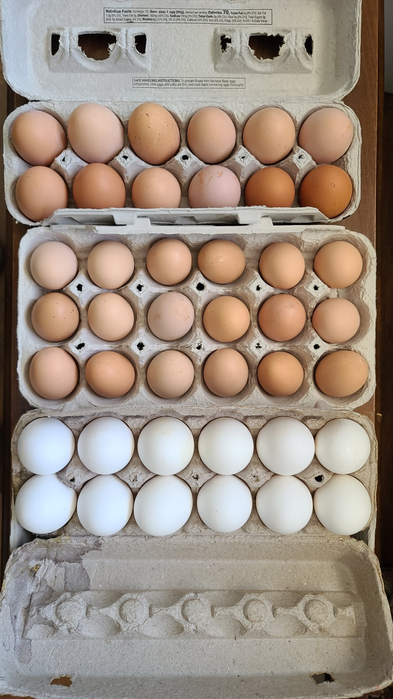
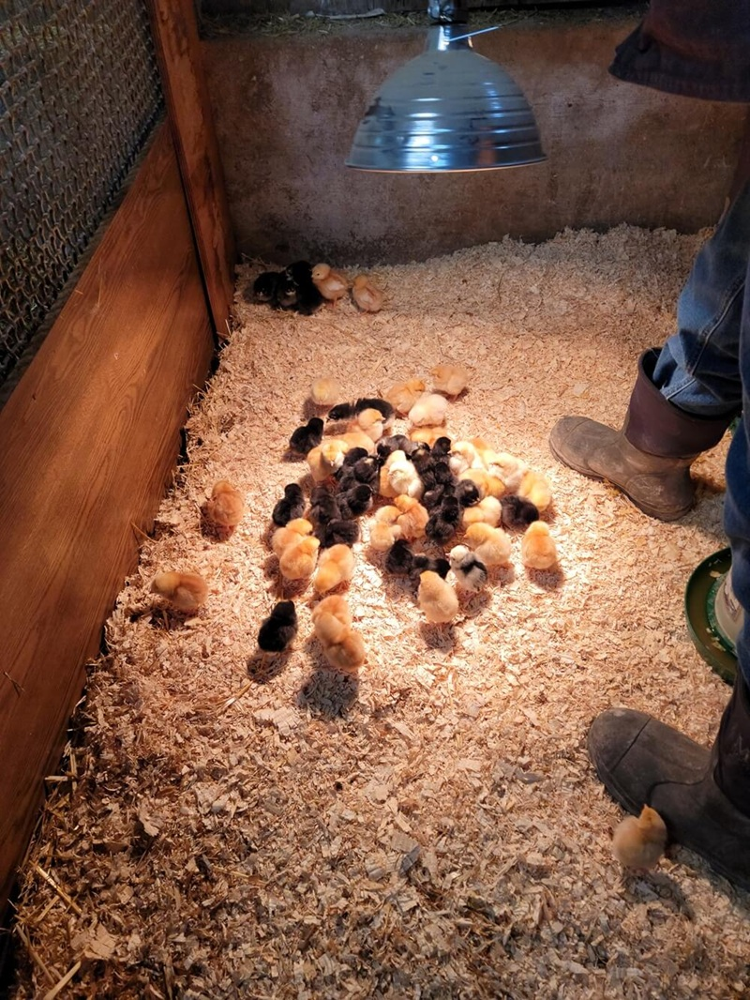
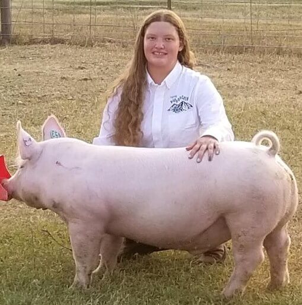
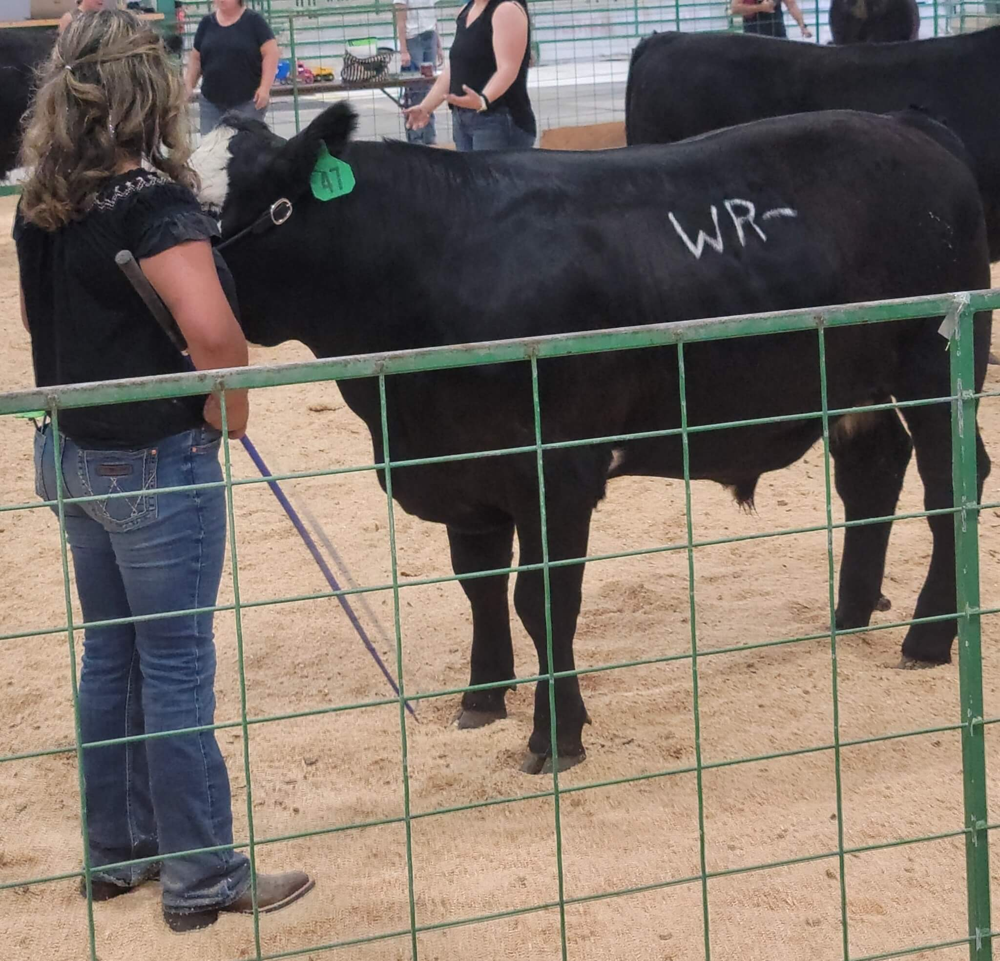
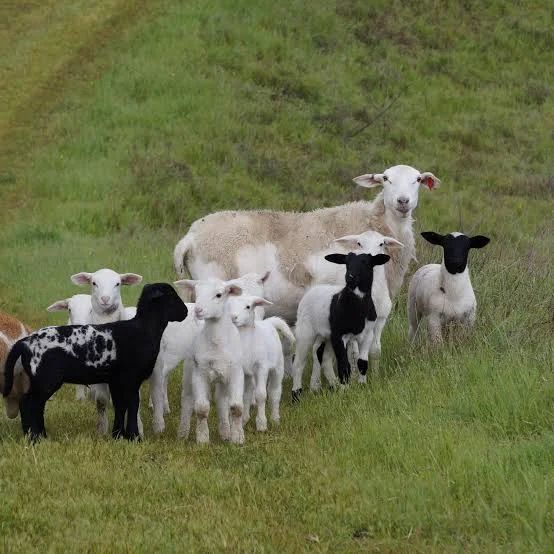

Products and Services
Whoa Mule Ranch offers a variety of ranch products and services for local families, ranchers, and community members. From farm fresh eggs and chicks to livestock and goat pasture help, we take pride in providing quality options with care.
Fresh Eggs

Our farm fresh eggs are available regularly and come in a variety of natural shell colors. They are a great choice for families looking for fresh local food straight from the ranch.
Chicks

We also offer baby chicks seasonally for families who want to start or grow their flock. Chicks are a great option for fresh egg production and small homestead projects.
Hogs

We raise hogs for processing and family food production. Our hogs are cared for with attention and are a strong option for those looking for quality pork.
Beef

We offer beef animals for 4 H projects or processing. Our cattle are raised with care, and we enjoy helping families and youth involved in agriculture.
Sheep

We raise sheep for wool and processing. Our sheep and lambs are cared for with attention and are an important part of our ranch.
Goat Rentals

Our goats are available for natural weed control and pasture cleanup. Goat rentals are a helpful and natural way to manage overgrown areas without using harsh chemicals.
Questions About Availability
Availability can change throughout the year. Please contact us to learn what is currently available and to ask questions about our ranch products and services.